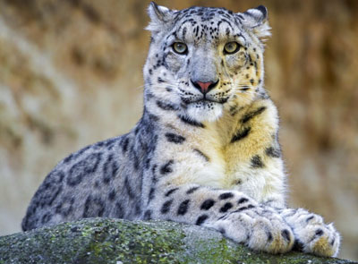

Снежный барс (другое его название – ирбис) – крупный хищник семейства кошачьих. Длина его тела более двух метров, вес взрослых особей 50-60 кг. В России он обитает на юге Красноярского края, республике Туве, Хакасии. Но численность его очень мала и продолжает сокращаться. На данный момент популяция ирбиса в РФ составляет не более 500 особей. Одна из самых серьезных угроз для снежного барса – браконьерство. В России, да и в других странах, где обитает этот хищник, он взят под охрану государства. У нас он занесен в Красную книгу как исчезающий вид. |
 |